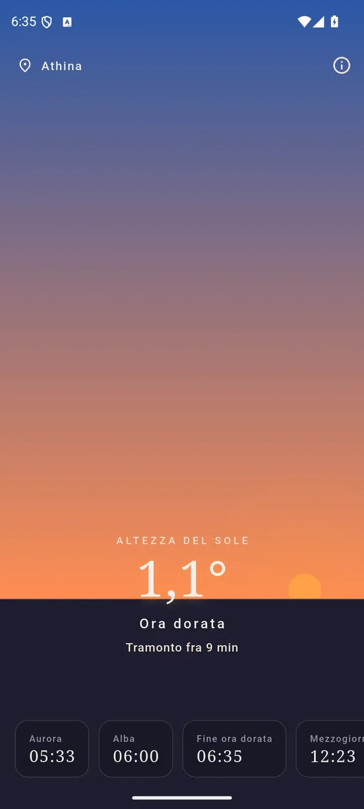
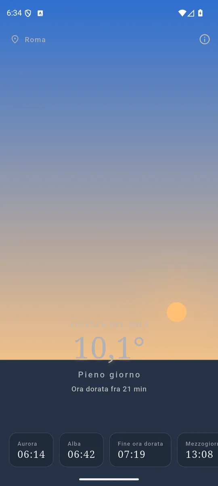
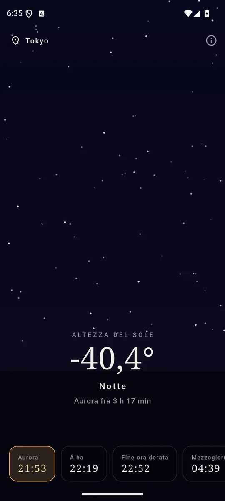

ItalianoEnglish
Quanto manca all'ora dorata? Golden apre e te lo dice, con il cielo che in quel momento hai fuori dalla finestra disegnato sullo schermo. Non è una tabella di orari: è il Sole di adesso.

Il cielo sullo schermo è quello che hai fuori. 
Aurora, alba, mezzogiorno, tramonto, crepuscolo. 
E quanto manca alla luce buona, minuto per minuto.
Cosa ti dice
- Gli orari di oggi, dove sei. Aurora, alba, fine dell'ora dorata, mezzogiorno solare, ora dorata della sera, tramonto, crepuscolo.
- Cosa sta facendo la luce adesso — notte, ora blu, ora dorata, pieno giorno — e quanto manca al momento dopo.
- L'altezza del Sole in gradi, aggiornata mentre guardi.
- In italiano e in inglese, secondo la lingua del telefono.
Un solo numero dipinge tutta l'app
Lo schermo ha il colore che ha il cielo, il Sole sta all'altezza a cui sta davvero e nella direzione in cui guardarlo, e tutto si muove insieme a lui: ogni colore dell'app è calcolato dall'altezza del Sole sull'orizzonte, e da nient'altro. È il motivo per cui non c'è nessuna schermata «di notte» da attivare, e nessun momento in cui i colori e gli orari possono contraddirsi.
L'ora dorata e l'ora blu, come le intendono i fotografi
L'ora dorata va da 4 gradi sotto l'orizzonte a 6 gradi sopra; l'ora blu è la fascia fra 6 e 4 gradi sotto. L'alba cade dentro l'ora dorata, che è esattamente il motivo per cui l'ora dorata esiste. Sono convenzioni, non astronomia — e sono scritte in chiaro nell'app e nel codice, così sai cosa stai guardando invece di fidarti.
Funziona dove finisce il giorno
Sopra il circolo polare ci sono giorni in cui il Sole non tramonta e giorni in cui non sorge. L'app lo dice, invece di inventarsi un'ora: la fase della luce la legge dall'altezza del Sole, che esiste sempre, e non da un elenco di eventi che lassù può essere vuoto.
I tuoi dati restano tuoi
Golden chiede la posizione approssimativa e nient'altro: un chilometro sposta l'alba di due secondi, quindi la posizione precisa sarebbe chiedere più del necessario. Niente posizione in background — guarda il Sole solo mentre sei nell'app — niente account, nessun server: la posizione non esce dal telefono e noi non la vediamo mai. Tutto è calcolato a bordo, anche in aereo.
E se preferisci non darla, c'è una lista di città inclusa nell'app — da Roma a Tromsø — che funziona esattamente allo stesso modo. La lista è dentro l'app, non su un server.
Come si paga
Con un banner ancorato in fondo, e basta: nessun abbonamento, nessun orario tenuto in ostaggio.
Dove trovarla
Non è ancora su Google Play. Quando ci sarà, il collegamento comparirà qui.